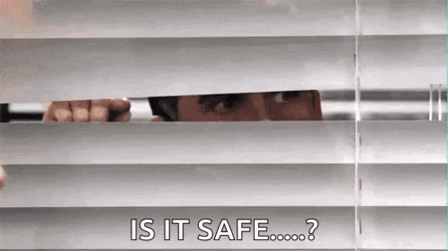

Your Team Isn't Being Honest with You.
They’re not lying to you specifically.
They’re just not telling you about a concern, or they talked themselves out of an idea and decided not to share it with you. Or maybe it’s a mistake they're keeping quiet and hoping you won't notice.
They’re not doing this because they don't care. It’s because they're not sure it's safe.

Years ago, I worked in a fairly toxic environment. The business’ executive was never open to differing opinions, and would actually consider them challenges to her authority. She would berate people in public. She told people they didn’t know how to do their jobs, and could never understand hers. In one instance, she actually fired someone because they disagreed with her.
And you’ll never guess what happened.
People stopped speaking up!
She surrounded herself with people who only told her what she wanted to hear. And that’s not good for any business. (Or any relationship, really.)
Cue the term psychological safety. You’ve heard this before, but like anything else, the phrase starts to get thrown around often enough that it almost loses meaning.
Psychological safety is the belief that we have that we can take risks, speak up, ask questions, admit mistakes, or propose new ideas without any fear of punishment, humiliation, or retribution.
Teams like to say they have psychological safety, but the truth is that most have less of it than they think.
And most leaders have no idea.
What’s Actually Happening
It’s a perfectly normal human thing to run a quick calculation before speaking up in a group. This usually happens without us knowing it, and it happens fast. We’re taking stock of the situation, who we’re surrounded by, and drawing on past experience to determine the best approach.
“Is this safe to say?”
“What happened last time someone raised something like this?”
“Will I look incompetent?”
Or in a particularly toxic situation, “How will my manager’s mood impact their reaction to this?”
Depending on the subconscious answer to those questions, an employee who doesn’t feel safe is going to hold back. This isn't weakness, shyness, or disloyalty. It's self-preservation.
And it happens on good teams, with good people, under good managers, all the time.
What it Looks Like When People Feel Safe
When psychological safety is real, you see it.
Someone says "I don't think this is going to work" in the meeting, not after it. Someone asks a question even though they may be worried that it sounds stupid. Someone admits a mistake before you notice it. Someone floats a half-formed idea without apologizing for it first.
None of these are dramatic. But in each of those scenarios, the individual knows they can say the thing, or make a mistake, without worrying about offending.
It’s a signal that your team is running on honest information, that they trust each other.
At a Small Company, This Comes Down to You
In a larger organization, psychological safety is a culture and systems challenge. But if your team is smaller, then the challenge all comes down to leadership.
Your team is watching you closely - more closely than you probably realize. They remember how you reacted the last time someone brought you a problem. They noticed whether you admitted you were wrong, or whether you quietly moved on as if you hadn't said what you said. They clocked every moment where honesty was (or wasn't) rewarded.
You don't get to opt out of being the signal. Everything you do teaches your team what the rules are.
This isn't a reason to feel guilty. It's a reason to feel powerful. Because if the culture comes from you, that means you have the power to change it and make an impact.
5 Minute Psychological Safety Check
We don’t have to overengineer this. Take a few moments to honestly answer yes or no to the following statements:
- My team members bring me problems before they become crises.
- When someone disagrees with a decision, they say so in the moment, or they speak with me as soon as possible after. (I don’t hear about it through the grapevine.)
- I can recall a recent time someone on my team admitted a mistake openly.
- New or half-formed ideas get raised without the person over-apologizing first.
- If I made a bad call last week, my team would feel comfortable telling me.
If you’ve got more “no” responses than “yes,” then you have an opportunity to make a real difference. Start talking to your team, invite feedback, admit your mistakes.
You don't need a training program or a formal HR team to start. You just need to be genuinely interested in what your people actually think.
That's a low bar. And it changes everything.